library(tidyverse)
library(ggdist)
library(distributional)
library(patchwork)
library(mgcv)
library(tidymodels)
library(marginaleffects)
library(gganimate)
theme_set(theme_classic())
set.seed(2026)Uncertainty Visualization
Whenever we analyze a dataset, it’s worth keeping in mind that our observations could have turned out differently. Different participants might have enrolled in the study, the sensor might be affected by measurement noise, the author might have chosen a different word. Consequently, all inferences we draw from data are accompanied by some degree of uncertainty. One of the fundamental ideas of statistics is that we can precisely measure and honestly communicate this uncertainty.
Yet, for most of this class, we’ve simply displayed the data as they are. When most of us see a visualization like this, we don’t automatically wonder about the hypothetical alternatives. Therefore, if we want our visual designs to communicate uncertainty, we need clear ways of representing them graphically.
Frequency Framing
Discrete Data
For events with discrete outcomes (e.g., win the lottery or not), it is possible to visualize the probabilities directly. For example, if there are just two outcomes, we can plot the probability on along a line; if there are multiple outcomes, a stacked bar chart can achieve the same effect.
sample_grid <- function(p = 0.5) { expand.grid(seq_len(25), seq_len(25)) |> mutate(response = sample(0:1, n(), replace = TRUE, prob = c(1 - p, p))) } true_prob <- c(0.01, 0.1, 0.4) outcomes <- map(true_prob, ~ sample_grid(.)) |> bind_rows(.id = "p") |> mutate(true_prob = true_prob[as.integer(p)]) outcomes |> group_by(p) |> summarise(empirical_prob = mean(response)) |> ggplot() + geom_col(aes(as.factor(true_prob), empirical_prob)) + scale_y_continuous(expand = c(0, 0, 0, 0.1)) + labs(x = "True Probability", y = "Empirical Probability")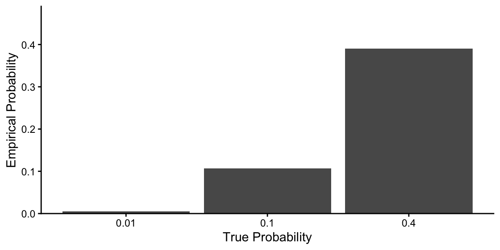
However, classic studies have shown that humans are poor at judging probabilities represented in this way (Kahneman and Tversky 1973). A more effective alternative is frequency framing Hoffrage et al. (2000). The idea is simple: create marks that represent the potential outcomes, and ensure the frequency of the types reflects the underlying probabilities. For example, the displays below represent the probabilities of events with 1, 10, and 40% probability of occurring.
ggplot(outcomes) + geom_tile(aes(Var1, Var2, fill = as.factor(response)), col = "white", size = 0.6) + facet_wrap(~true_prob) + scale_y_continuous(expand = c(0, 0)) + scale_x_continuous(expand = c(0, 0)) + coord_fixed() + labs(fill = "Outcome", col = "Outcome") + scale_fill_manual(values = c("#D9D9D9", "#595959")) + theme( axis.text = element_blank(), axis.ticks = element_blank(), axis.title = element_blank() )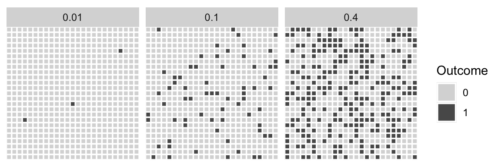
A frequency framing approach to representing the probabilities of discrete outcomes.
Continuous Data
How can we generalize this idea to continuous outcomes? For example, in an upcoming election, party A might defeat party B by X%. We might believe that X is distributed normally with mean 1.1 and standard deviation 2.4. One approach is to visualize this using the density plot below.
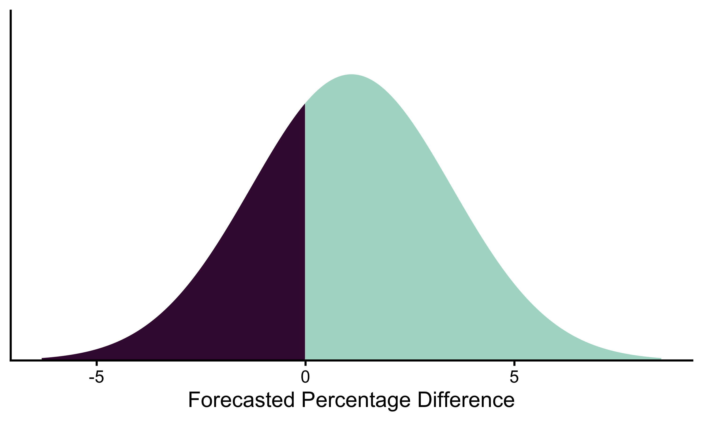
Uncertainty in a continuous outcome shown using a probability density. We created this plot using the ggdist package, which extends ggplot2 with layers for uncertainty visualization. The key ideas are in the second layer. The
stat_slablayer defines graphical marks for probability densities. One of its supportedaesarguments isxdist, which is expected to give an analytical formula for a probability distribution. For example,dist_normal(mean, sd)is the formula for a Gaussian distribution. We split the colors between parties using thefillargument.estimate <- tibble(mean = c(1.1), sd = c(2.4)) ggplot(estimate) + stat_slab(aes(xdist = dist_normal(mean, sd), y = 0, fill = after_stat(x > 0))) + scale_y_continuous(expand = c(0, 0, 0, 0.1)) + scale_fill_manual(values = c("#400D3C", "#ADD9CC")) + labs(x = "Forecasted Percentage Difference") + theme( axis.text.y = element_blank(), axis.title.y = element_blank(), axis.ticks.y = element_blank(), legend.position = "none", panel.grid = element_blank(), panel.border = element_blank() )This visualization suffers from the same limitations as directly representing probabilities in the discrete outcome case. The frequency framing version creates a dotplot for hypothetical outcomes at locations proportional to their probability. It seems like a simple change, but it is often better perceived, since judging counts is often easier than comparing areas.
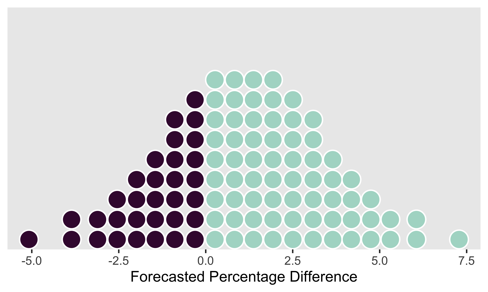
A frequency framing alternative to visualizing uncertainty in a continuous outcome. We created this dotplot using the
stat_dotslayer fromggdist. Like in ordinary ggplot2, ggdist allows us to compose layers. For example, we can create a combined density and dot plot (this is called a rain cloud plot). Thesideargument puts the density (the cloud) above the interval and the dots (the rain) below it, and settingscale = 0.5keeps the two from overlapping.ggplot(estimate, aes(xdist = dist_normal(mean, sd), y = 0, fill = after_stat(x > 0))) + stat_slab(scale = 0.5, side = "top") + stat_dots(scale = 0.5, side = "bottom", col = "white") + scale_y_continuous(expand = c(0, 0, 0, 0.1)) + scale_fill_manual(values = c("#400D3C", "#ADD9CC")) + labs(x = "Forecasted Percentage Difference") + theme( axis.text.y = element_blank(), axis.title.y = element_blank(), axis.ticks.y = element_blank(), legend.position = "none", panel.grid = element_blank(), panel.border = element_blank() )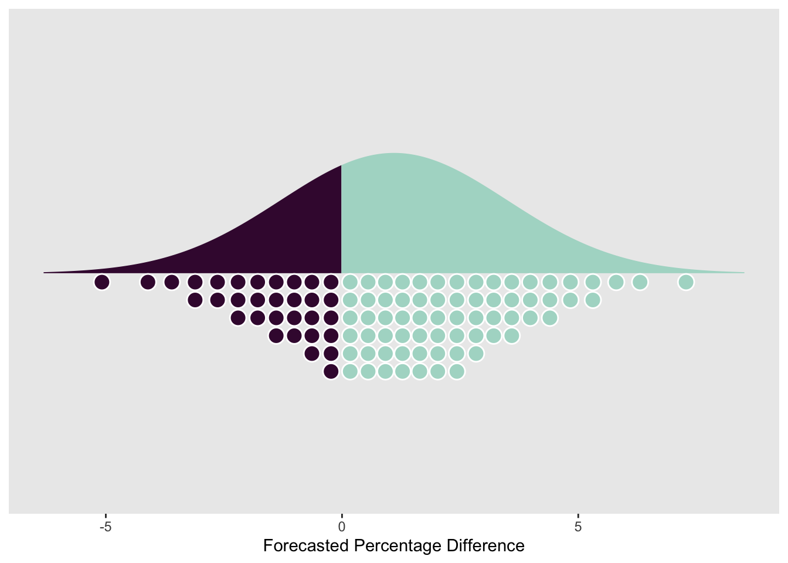
A rain cloud plot combines density and dot views to get the best of both frequency framing and density views. Exercise: What are the strengths/weaknesses of using more dots in a frequency framing visualization?
Multiple Inferences
We can compactly display the uncertainties for many inferences by stacking dotplots or intervals. For example, in the plot below, we show chocolate quality across many countries. More than simply describing the average quality of chocolate bars across countries, it helps answer the more nuanced question, “If I were in a grocery store and randomly picked a chocolate bar from country X, what would I expect its quality to be?” That said, it can still be helpful to include summary intervals showing the mean +/- 1 and two standard deviations (right plot).
cacao <- readRDS("data/cacao.rds") cacao_small <- cacao |> filter(location %in% c("Ecuador", "Australia", "Belgium", "Switzerland", "Germany")) p <- ggplot(cacao_small, aes(rating, reorder(location, rating))) + theme(axis.title.y = element_blank()) p1 <- p + stat_dots(dotsize = .3, binwidth = .2, fill = "#6894A6") p2 <- p + stat_dotsinterval(dotsize = .3, binwidth = .2, fill = "#6894A6") p1 + p2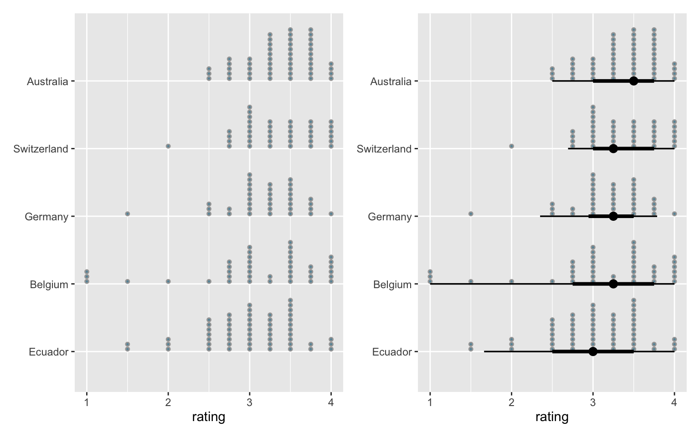
Instead of dots, we can apply the ridgeline plots we saw in the small multiples notes. This no longer supports frequency framing, but it’s much easier to view partially overlapping density plots than dot plots.
p + stat_slab(height = 2, col = "black", fill = "#6894A6")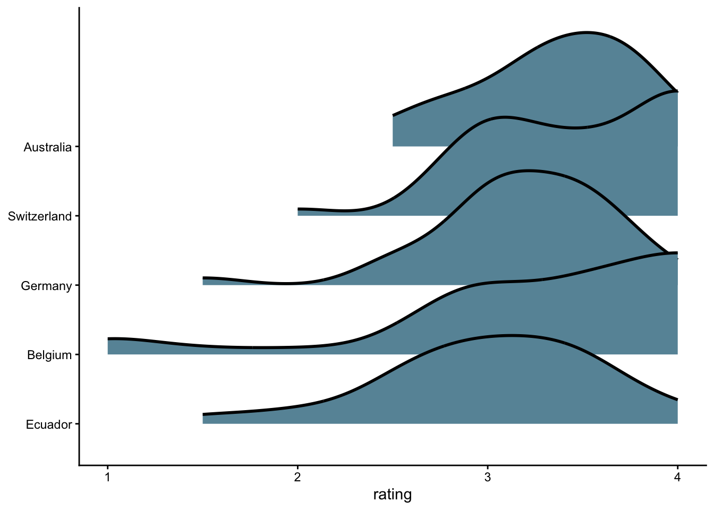
Uncertainty in chocolate qualitiy using ridgelines. Since these are densities, we don’t necessarily need countries to have similar counts. When working with a larger subset of countries, this makes a big difference.
data(cacao) p <- cacao |> group_by(location) |> filter(n() > 12) |> ggplot(aes(rating, reorder(location, rating))) + theme(axis.title.y = element_blank()) p1 <- p + stat_slab(height = 2, col = "black", fill = "#6894A6") + labs(title = "Legible :)") p2 <- p + stat_dots(dotsize = 0.3, binwidth = 0.2, col = "#6894A6") + labs(title = "Illegible :(") p1 + p2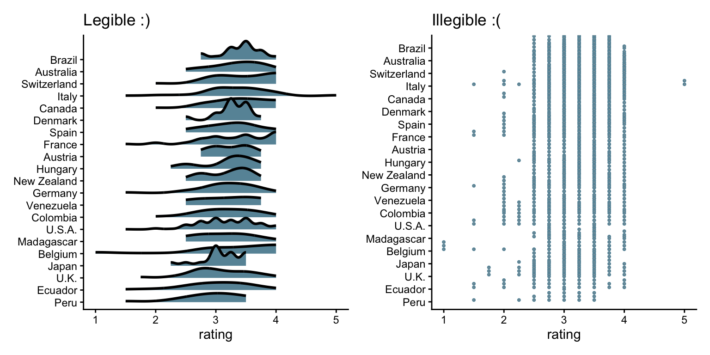
Comparing dots with slabs for evaluating a continuous uncertainty. Frequency framing is a reasonable default strategy for representing uncertainty. However, there are many other ways to visually encode distributions over outcomes, and they can be worth knowing for more specialized visualization problems. For example, if we had many more countries in our chocolate bar ratings plot, we need a more compact way of representing uncertainty. Our next few notes explore alternatives for this and other situations.
Exercise: What are strengths and weaknesses of overlaying statistical summaries (e.g., slabs) on frequency framing visualizations?
Uncertainty in Point Estimates
In many cases, frequency framing plots are a good default for visualizing uncertainty, especially for nontechnical audiences. If you have ever skimmed through scientific publications, though, you might have noticed that the overwhelming majority of uncertainty visualizations are based on error bars. They give an point estimate of a target quantity that’s assumed to exist in a larger population, and they use bars to represent the uncertainty in that estimate that results from using a random sample (rather than the full population).
While frequency framing gives a richer view of the distribution of possible outcomes, there are two scenarios where error bars are hard to beat,
- When we need to compactly represent uncertainty for many units.
- When we want to combine them with other plots.
Since error bars take up so little space, they can be included in highly information dense views. For example, the intervals cover 66, 90, and 95% of the central area for each of 10 normal distributions.
#\ fig-cap: Error bars can compactly visualize uncertainty in many point estimates. n <- 10 estimate <- tibble(id = seq_len(n), mean = rnorm(n), sd = rgamma(n, 4, 12)) ggplot(estimate) + geom_errorbarh(aes(mean, id, xmin = mean - 1.9 * sd, xmax = mean + 1.9 * sd)) + labs(title = "95% Confidence Intervals (Randomly Generated)")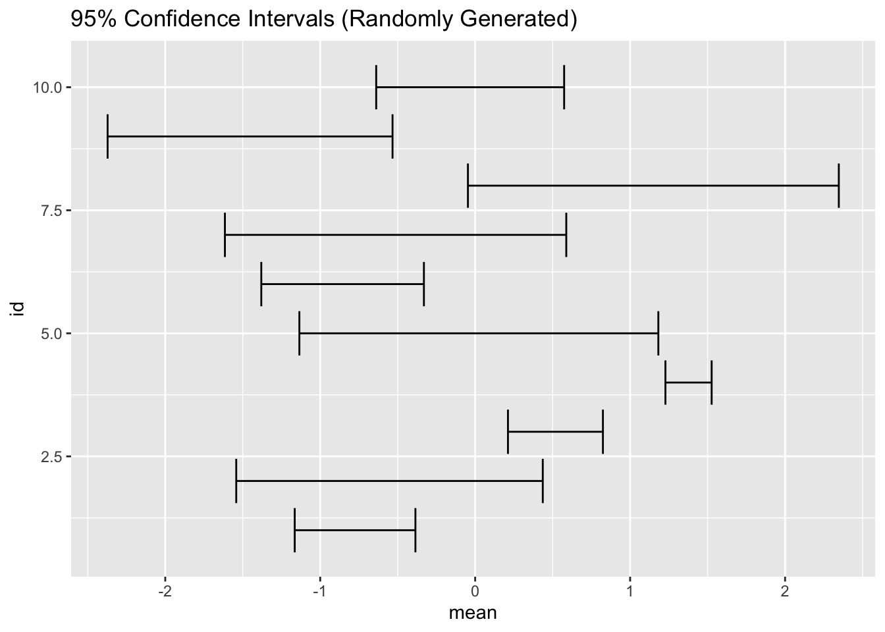
We created this using the
geom_errorbarhlayer, which draws horizontal error bars when given the center (x) and endpoints (xminandxmax) of the error bars.Since they are so compact, it is relatively easy to incorporate error bars into other visualizations. For example, we can replace points in a scatterplot with crosses that summarize uncertainty in each dimension.
#\ fig-cap: Integrating error bars into a scatterplot visualization. points <- tibble( x = rnorm(n), y = rnorm(n), sd_x = rgamma(n, 3, 24), sd_y = rgamma(n, 3, 24) ) ggplot(points, aes(x, y)) + geom_errorbar(aes(ymin = y - 1.9 * sd_y, ymax = y + 1.9 * sd_y)) + geom_errorbarh(aes(xmin = x - 1.9 * sd_x, xmax = x + 1.9 * sd_x)) + coord_fixed() + labs(title = "95% Error Bars")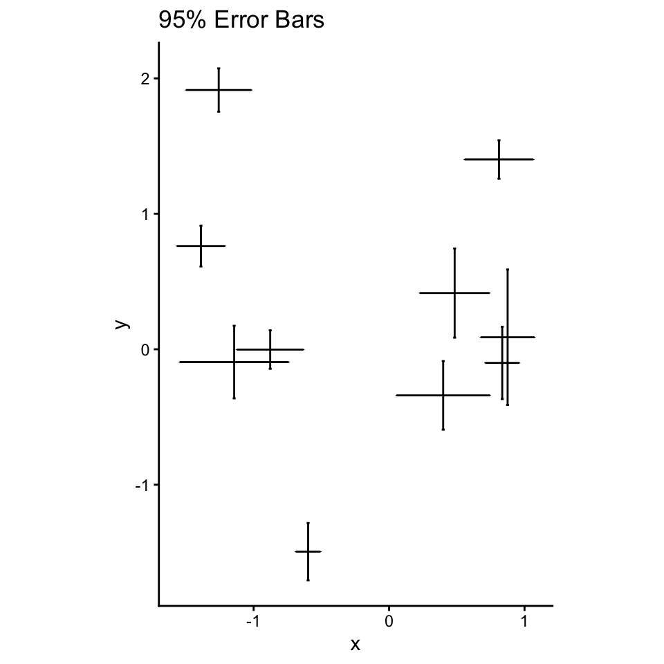
This was constructed by composing both horizontal
geom_errorbarhand verticalgeom_errorbarlayers.One difficulty with error bars is that their interpretations are not self-evident from their appearance — they need to be included in the title or caption to the figure. For example, 90 and 99% confidence intervals have different meanings, and this needs to be explained clearly.
#\ fig-cap: Error bar visualizations can change substantially when changing the confidence level, even when the actual uncertainty about the estimate is unchanged. level_compare <- tibble(mean = rnorm(1), sd = rexp(1), level = c(0.66, 0.9, 0.95, 0.99)) |> mutate( scaling = qnorm(level + 0.5 * (1 - level)), lower = mean - scaling * sd, upper = mean + scaling * sd ) ggplot(level_compare) + geom_errorbarh(aes(mean, as.factor(level), xmin = lower, xmax = upper)) + labs(x = "CI for Mean", y = "Significance Level")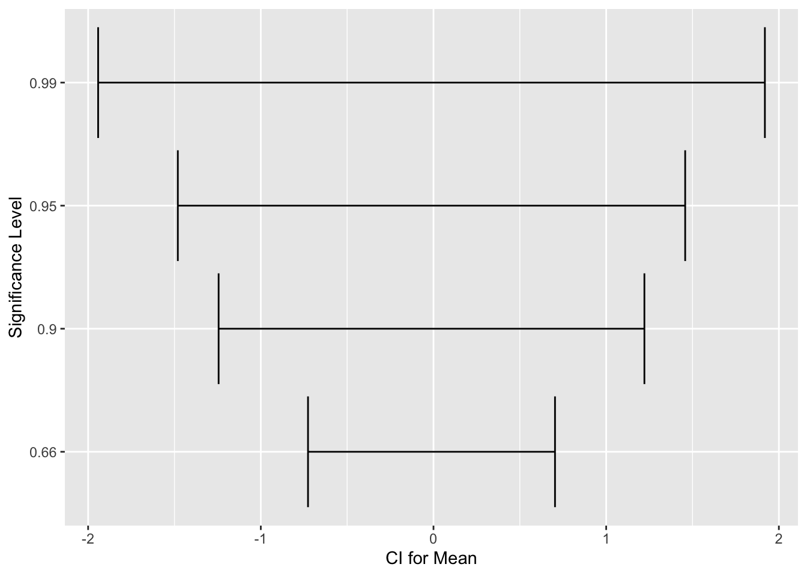
A variation on error bars that pack a little more information in nearly as little space is the graded error bar. This is a type of error bar where different levels of thickness are matched with different interpretations. In the example below, we are simultaneously showing 90, 95, and 99% confidence intervals for a mean.
ggplot(estimate) + stat_pointinterval(aes(xdist = dist_normal(mean, sd), y = id)) + labs(title = "Graded CIs (66 and 95%)")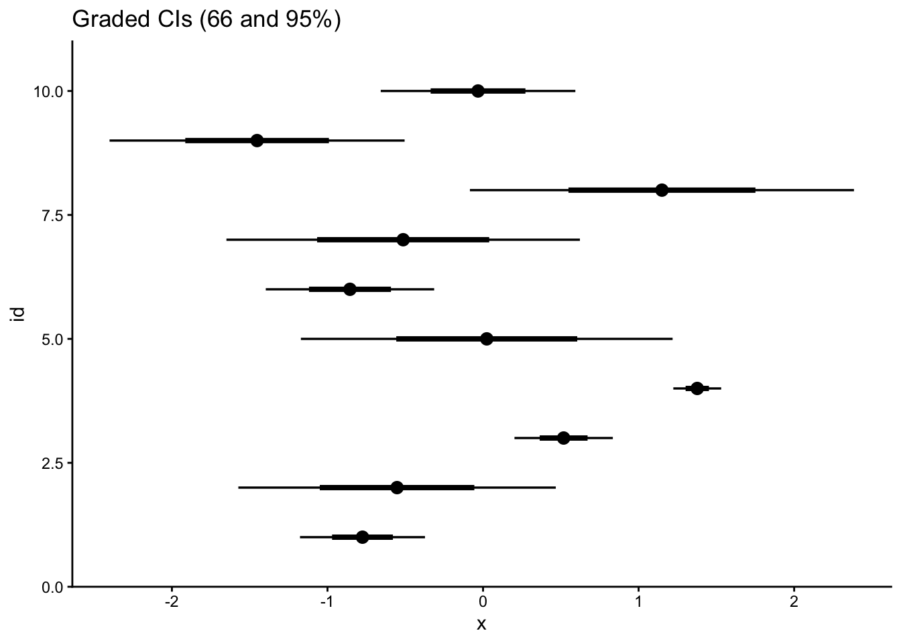
These graded error bars can be combined with distribution plots to create eye or half-eye plots. This approach benefits from the advantages of both the distribution and graded error approaches. From the distribution component, we can see the full distribution of uncertainty, not simply summaries. Using the error bar, we can tell whether specific values are above or below important cutoffs.
p1 <- ggplot(estimate) + stat_halfeye(aes(xdist = dist_normal(mean, sd), y = id)) + labs(title = "Half Eye Plot") p2 <- ggplot(estimate) + stat_dotsinterval(aes(xdist = dist_normal(mean, sd), y = id)) + labs(title = "Dot Interval Plot") p1 + p2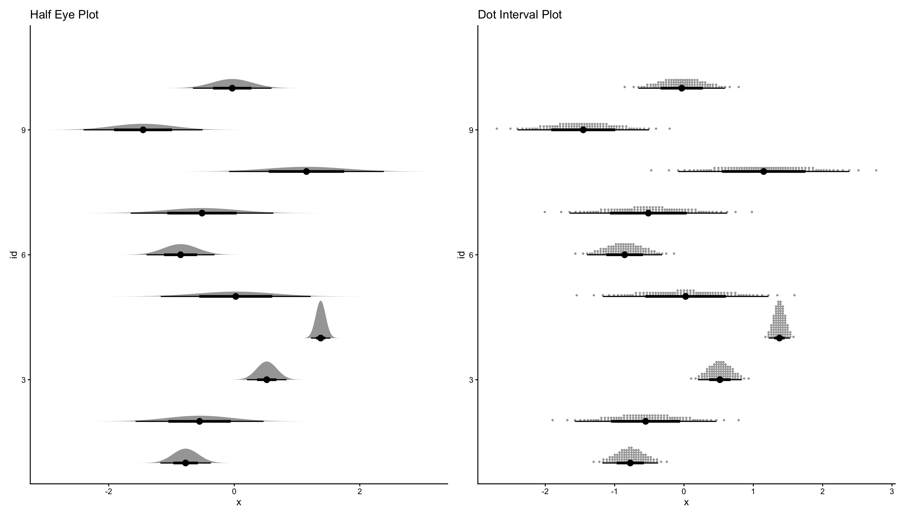
A related approach is to fill in subsets of a distribution plot according to more interpretable cutoffs.
ggplot(estimate) + stat_halfeye(aes(xdist = dist_normal(mean, sd), y = id, fill = stat(level)), .width = c(0.66, 0.9, 0.95)) + scale_fill_brewer(na.value = "#f7f7f7")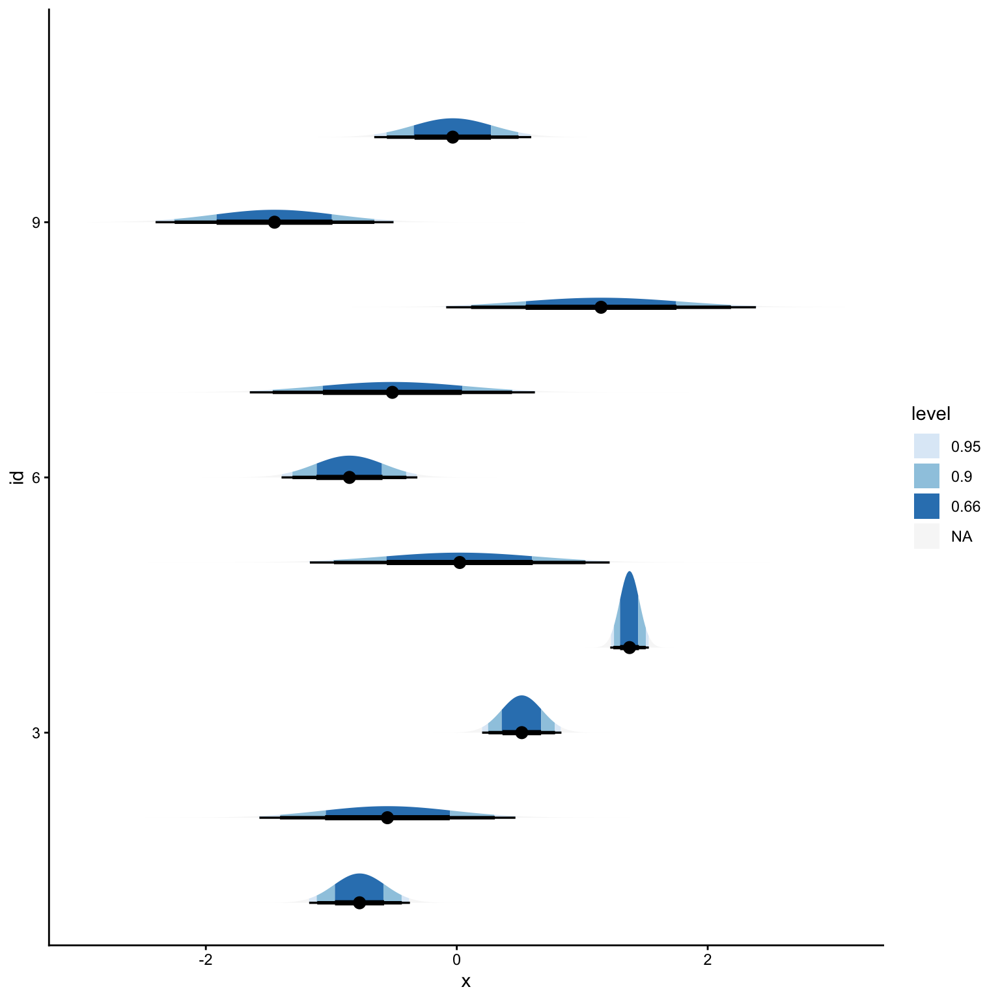
Two other encodings are worth knowing, but are harder to fit into the rest of this discussion. In interval plots, the fill opacity is used to encode probability. It is harder to evaluate the exact probability values, but it is a very compact representation.
p1 <- ggplot(estimate) + stat_interval( aes(xdist = dist_normal(mean, sd), y = id, color_ramp = stat(level)), .width = c(0.66, 0.9, 0.95), col = "#64798C" ) p2 <- ggplot(estimate) + stat_gradientinterval( aes(xdist = dist_normal(mean, sd), y = id), fill_type = "segments", col = "#64798C" ) p1 + p2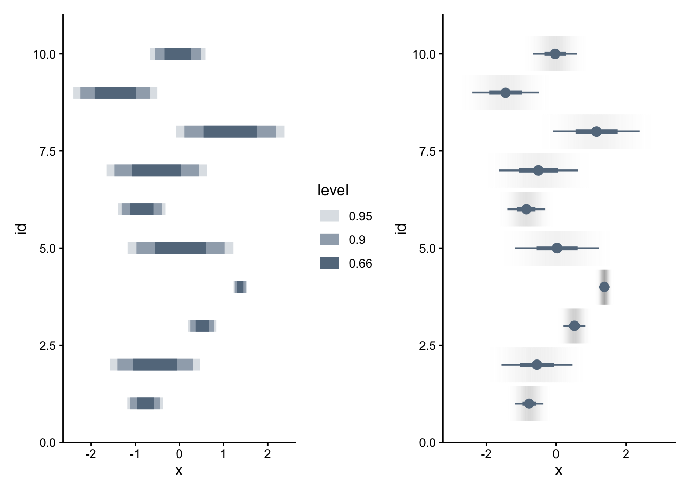
A second encoding is the complementary cumulative distribution (CCDF) plot. It represents the probability that the data will lie above a particular value. Some studies have found that nontechnical audiences often have better inferences when they are presented distributional uncertainty via CCDFs.
ggplot(estimate) + stat_ccdfinterval( aes(xdist = dist_normal(mean, sd), y = id), col = "#64798C", fill = "#d4dae0" ) + scale_x_continuous(expand = c(0, 0))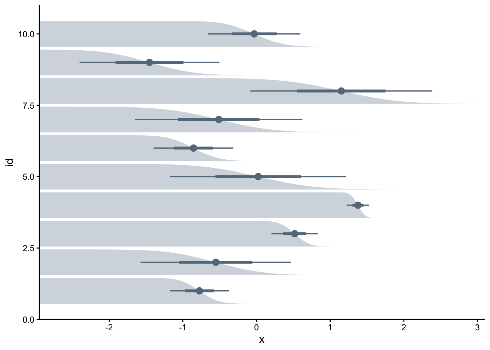
All the examples we’ve worked with in these notes have used the means and standard deviations from hypothetical normal distributions. However, they can all be created using the data itself. For example, here are
point_intervalandslab_eyeintervals for a datasetrandom_drawswhere we draw 100 samples from 10 different gamma distributions.random_draws <- map_dfr( 1:10, ~ tibble(x = rgamma(1000, runif(1, 2, 8), runif(1, 5, 10))), .id = "id" ) p1 <- ggplot(random_draws) + stat_pointinterval(aes(x, id)) p2 <- ggplot(random_draws) + stat_halfeye(aes(x, id, fill = stat(level))) + scale_fill_brewer(na.value = "#f7f7f7") p1 + p2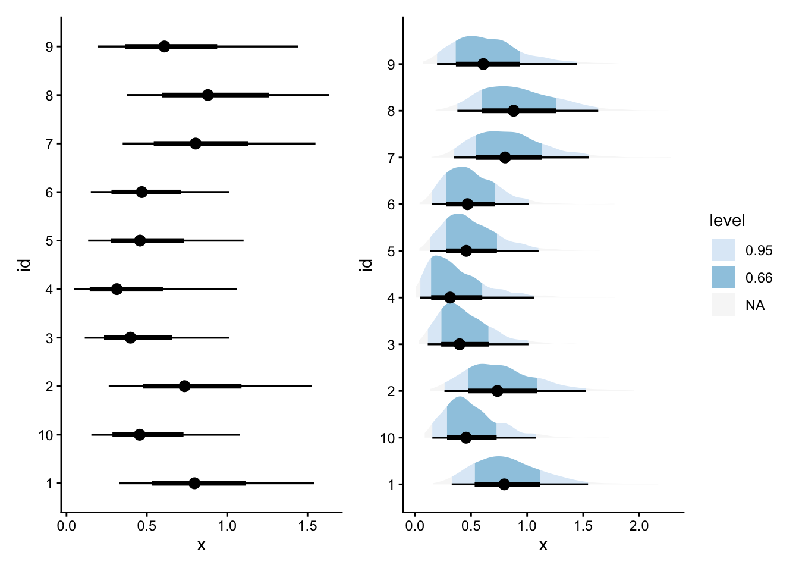
Hypothetical Outcomes
From our previous discussions, we now have a rich set of techniques for representing uncertainty for either discrete or continuous random values. But often, we hope to support inferences for more complex objects, like curves, compositions, or networks. How can we visualize uncertainty in these more richly structured objects?
For example, in linear regression, it’s possible to visualize the uncertainty associated with the fit using a confidence band. The guarantee is that, across many random samples from the same population, the line will usually fall entirely within the band.
supernova <- read_csv("https://raw.githubusercontent.com/krisrs1128/stat679_code/main/examples/week13/supernova.csv") intervals <- gam(Magnitude ~ E9, data = supernova) |> predictions(newdata = supernova |> select(E9)) ggplot(intervals) + geom_point(data = supernova, aes(E9, Magnitude)) + geom_line(aes(E9, estimate)) + geom_ribbon(aes(E9, ymin = conf.low, ymax = conf.high), alpha = 0.2) + scale_x_continuous(expand = c(0, 0))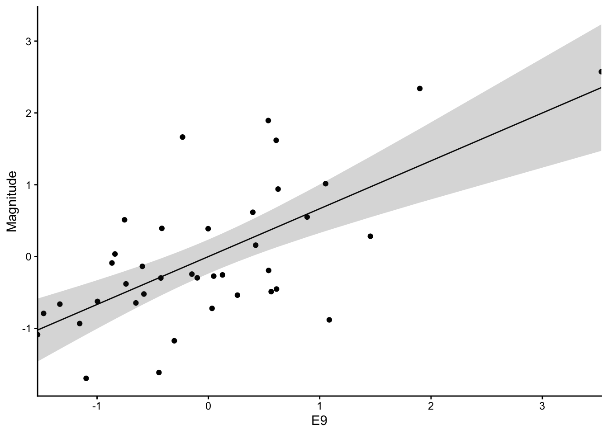
Have you ever wondered why the band is shaped in the way that it is? The curvature comes from the fact that there is uncertainty in both the intercept and the slope for the fitted line. This is easy to understand by overlaying the regression lines obtained from several versions of the same dataset. Formally, we’ve applied the bootstrap to resample the original data, though we could have just as well drawn from the posterior distribution of a fitted bayesian linear regression.
bootstrap_curves <- function(formula, data, newdata, times = 150) { bootstraps(data, times = times)$splits |> map(analysis) |> map(~ gam(formula, data = .x)) |> map(~ as.numeric(predict(.x, newdata = newdata))) |> map2(seq_len(times), ~ tibble(newdata, Magnitude = .x, .draw = .y)) |> bind_rows() } bootstrap_curves(Magnitude ~ E9, supernova, supernova |> select(E9)) |> ggplot(aes(E9, Magnitude)) + geom_line( aes(group = .draw), col = "#d3d3d3", alpha = 0.5, size = 0.6 ) + geom_point(data = supernova) + scale_x_continuous(expand = c(0, 0))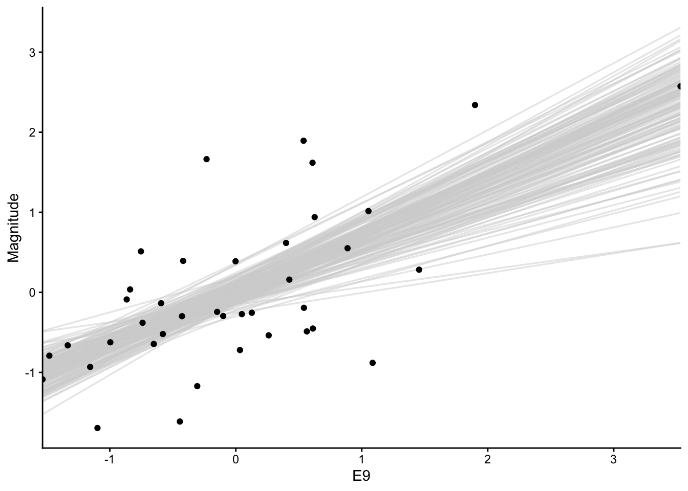
We can generalize this idea to nonlinear fits. For example, below, we are using multiple draws to represent the uncertainty of a smoothing spline regression between supernova Magnitude and another oen of the predictor variables. One nice aspect of showing multiple realizations is that it shows uncertainty in the “turns” of individual curves, which is not reflected in the confidence bands alone.
outcomes <- bootstrap_curves( Magnitude ~ s(E3, sp = c(.2)), supernova, supernova |> select(E3) ) ggplot(outcomes, aes(E3, Magnitude)) + geom_line( aes(group = .draw), col = "#d3d3d3", alpha = 0.5, size = 0.6 ) + geom_point(data = supernova) + scale_x_continuous(expand = c(0, 0))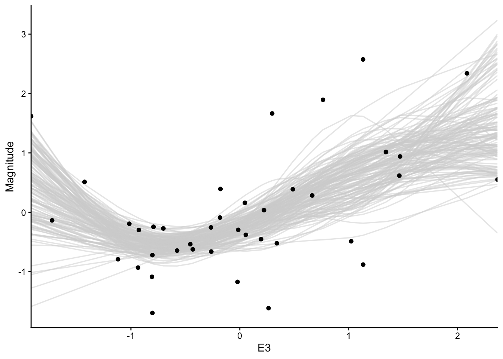
When we show multiple outcomes overlaid like this, our attention tends to focus on the area taken up by the multiple lines. In a true hypothetical outcome plot, we animate each outcome one at a time. This draws attention to the line-to-line uncertainty, rather than the area taken up by the ensemble. We can create a hypothetical outcome version of the plots above using the
gganimatepackage. This extends ggplot to allow transitions across subsets of data.p <- ggplot(outcomes, aes(E3, Magnitude)) + geom_line( aes(group = .draw), col = "#d3d3d3", size = 1.5 ) + geom_point(data = supernova) + scale_x_continuous(expand = c(0, 0)) + transition_time(.draw) + ease_aes("sine-in-out") anim_save("gam_hypo.gif", p, renderer = gifski_renderer())
Alternatively, we can animate individual events while displaying the full distribution in the background.
p <- ggplot(outcomes, aes(E3, Magnitude)) + geom_line( data = rename(outcomes, .draw2 = .draw), aes(group = .draw2), col = "#d3d3d3", alpha = 0.5, size = 0.6 ) + geom_line( aes(group = .draw), col = "red", size = 1.5 ) + geom_point(data = supernova) + scale_x_continuous(expand = c(0, 0)) + transition_states(.draw) anim_save("gam_hypo2.gif", p, renderer = gifski_renderer())
A somewhat less standard, but more interactive, approach would be to use dynamic linking. Each point in the scatterplot below is one hypothetical outcome, positioned by a PCA of the 150 bootstrapped curves. Brushing over points highlights the corresponding fits in the panel on the right.
draw_similarity <- outcomes |> arrange(.draw, E3) |> mutate(ix = rep(1:39, 150)) |> select(-E3) |> pivot_wider(names_from = ix, values_from = Magnitude) draw_coords <- draw_similarity |> recipe(~., data = draw_similarity) |> update_role(.draw, new_role = "id") |> step_normalize(all_numeric()) |> step_pca(all_numeric()) |> prep() |> bake(draw_similarity) |> mutate(.draw = row_number()) |> select(.draw, PC1, PC2) outcomes_pca <- outcomes |> left_join(draw_coords, by = ".draw") |> arrange(.draw, E3) write_csv(outcomes_pca, "data/hop_outcomes.csv") write_csv(draw_coords, "data/hop_draw_coords.csv")
$range = vg.Selection.intersect()
vg.hconcat(
vg.plot(
vg.dot(
vg.from("draw_coords"),
{x: "PC1", y: "PC2", fill: "#4c4c4c"}
),
vg.intervalXY({as: $range, brush: {fill: "none", stroke: "#4d4d4d"}}),
vg.width(300),
vg.height(300)
),
vg.plot(
vg.line(
vg.from("outcomes"),
{x: "E3", y: "Magnitude", z: ".draw", stroke: "#bbb", strokeWidth: 0.6}
),
vg.line(
vg.from("outcomes", {filterBy: $range}),
{x: "E3", y: "Magnitude", z: ".draw", stroke: "black", strokeWidth: 1.5}
),
vg.width(400),
vg.height(300)
)
)One aspect of hypothetical outcomes is that they represent uncertainty in the data space, not the parameter space. For example, in the regression above, we could have simply drawn error bars for the intercept and slope parameters of the fit. This would be a representation of uncertainty in the parameter space. The data space representation, however, is much more evocative, and preliminary experimental evidence suggests that this leads to better inferences in practical applications.
Though we have focused on hypothetical outcomes for relative simple settings, the idea is applicable quite generally. For example, there has been research on visualizing hypothetical outcomes on spatial and network data (NetHOPS and Visualizing geospatial information uncertainty).
A final observation: hypothetical outcome plots can natural build up to distributional visualizations. By layering the outcomes on top of one another, we can see the distribution emerge over time.
References
Cosmides, L. 1996. “Are Humans Good Intuitive Statisticians After All? Rethinking Some Conclusions from the Literature on Judgment Under Uncertainty.” Cognition 58 (1): 1–73. https://doi.org/10.1016/0010-0277(95)00664-8.
Hoffrage, Ulrich, Samuel Lindsey, Ralph Hertwig, and Gerd Gigerenzer. 2000. “Communicating Statistical Information.” Science 290 (5500): 2261–62. https://doi.org/10.1126/science.290.5500.2261.
Kahneman, Daniel, and Amos Tversky. 1973. “On the Psychology of Prediction.” Psychological Review 80 (4): 237.